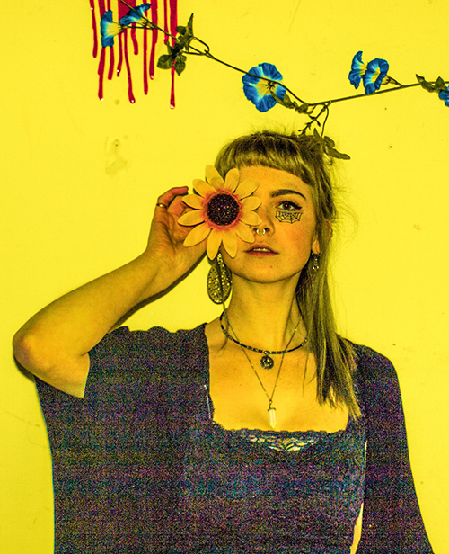

  <main id="main" role="main">
      <div class="grid main info-photo-text">
        <div class="unit unit-xs-1 unit-s-1 unit-m-1 unit-l-1-3">
          <div>
            
          </div>
        </div>

        <div class="unit unit-xs-1 unit-s-1 unit-m-1 unit-l-2-3">
          <div class="infopage">
            <h3>Why I do what I do</h3>
            <p class="info infoinfo">I have an immense passion for art and design and using that passion to help people with their businesses, hobbies, and brands. I specialize in print design, re-branding, and photography.I always put the needs of my clients first then add a little bit of my clean cut but edgy style into it as well.</p>
            <p class="info infoinfo">PRINT DESIGN: Posters, album covers, books, labels, cards, you name it and I can do it and I can do it well.</p>
            <p class="info infoinfo">RE-BRANDING: I can change your look to suit your needs and create something unique and most importantly, something you will be proud to show off!</p>
            <p class="info infoinfo">PHOTOGRAPHY: To add to websites, posters, albums, of your band, shops, and more. I enjoy dark and moody photography as much as I love sunny and bright photography. Contrast is what I do best. I even love the challenge of getting both into one photograph. Whatever you like I can make it happen. I use Polaroids, and my lovely Nikon D90.</p>
            <p class="info infoinfo infoemail">Get in touch! <i>hey@jesspaget.ca</i></p>
            <p class="info infoinfo infoemail">social media links below</p>
          </div>
        </div>
      </div>
    </main>